Anechoic WSJ0-2mix 16 kHz test set
| Mixture |

|
|||
|---|---|---|---|---|
| Ground-truth sources |

SI-SNR = -1.13 dB |

SI-SNR = 0.56 dB |

SI-SNR = -79.33 dB |

SI-SNR = -79.33 dB |
| Method | Separated source 0 | Separated source 1 | Separated source 2 | Separated source 3 |
| Supervised 2-source mixtures |
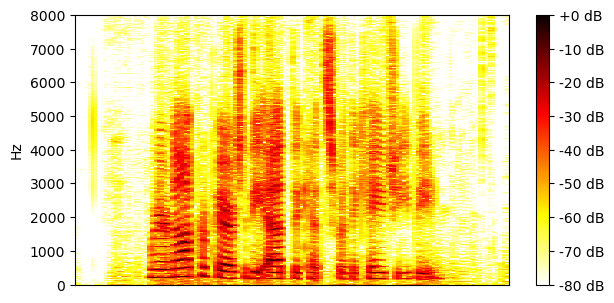
SI-SNR = 15.53 dB |
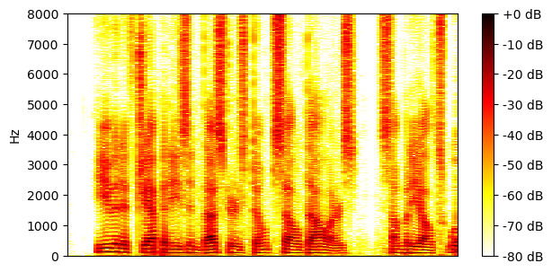
SI-SNR = 16.30 dB |
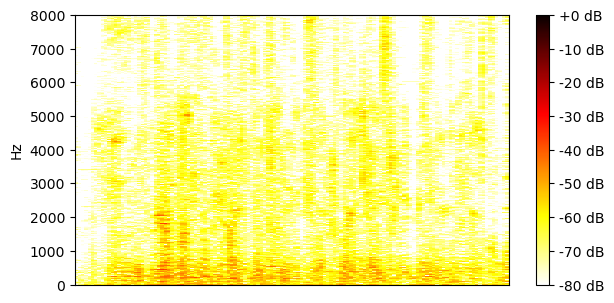
SI-SNR = -47.53 dB |
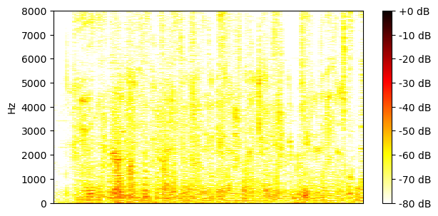
SI-SNR = -47.84 dB |
| Unsupervised 2-source mixtures |
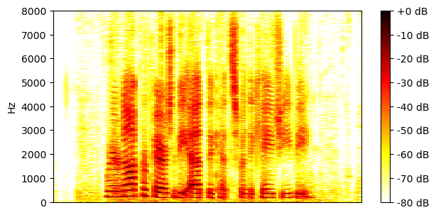
SI-SNR = 15.47 dB |
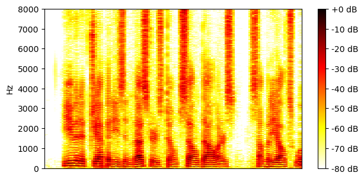
SI-SNR = 14.49 dB |
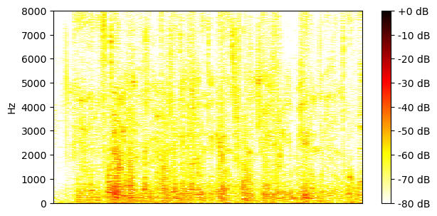
SI-SNR = -50.49 dB |
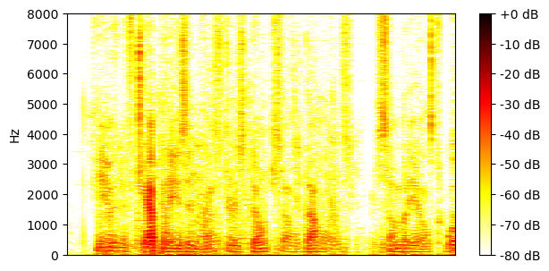
SI-SNR = -60.08 dB |
| Supervised 1-or-2-source mixtures |
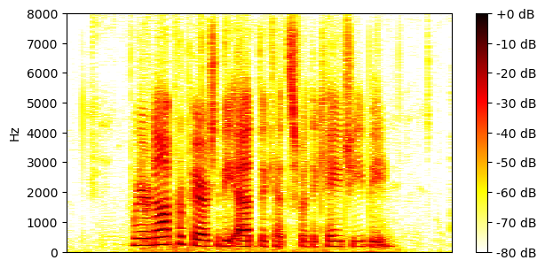
SI-SNR = 17.32 dB |
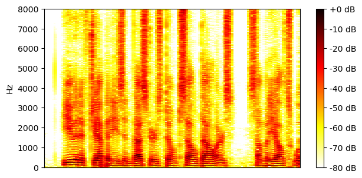
SI-SNR = 18.10 dB |
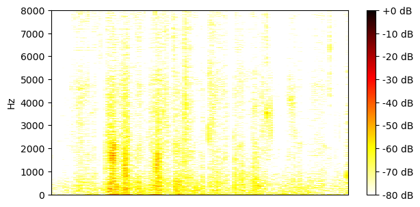
SI-SNR = -40.61 dB |
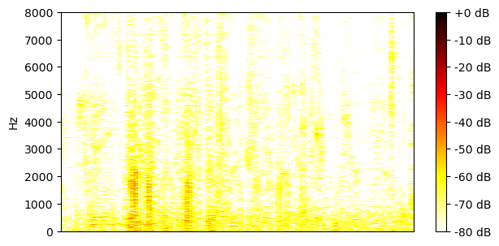
SI-SNR = -41.68 dB |
| Unsupervised 1-or-2-source mixtures |
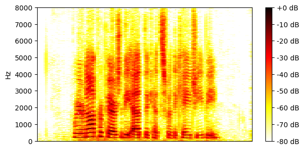
SI-SNR = 17.82 dB |
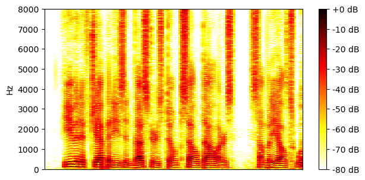
SI-SNR = 18.39 dB |
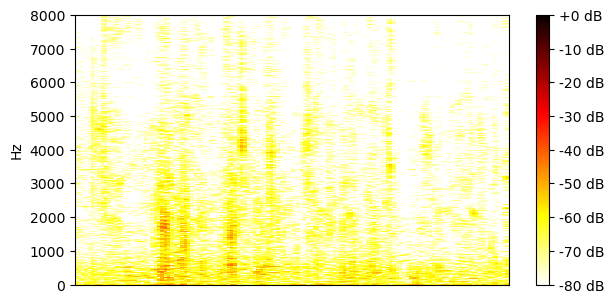
SI-SNR = -43.00 dB |
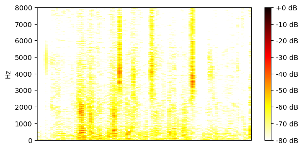
SI-SNR = -43.62 dB |
| Mixture |

|
|||
|---|---|---|---|---|
| Ground-truth sources |

SI-SNR = 3.98 dB |

SI-SNR = -4.11 dB |

SI-SNR = -80.07 dB |

SI-SNR = -80.07 dB |
| Method | Separated source 0 | Separated source 1 | Separated source 2 | Separated source 3 |
| Supervised 2-source mixtures |
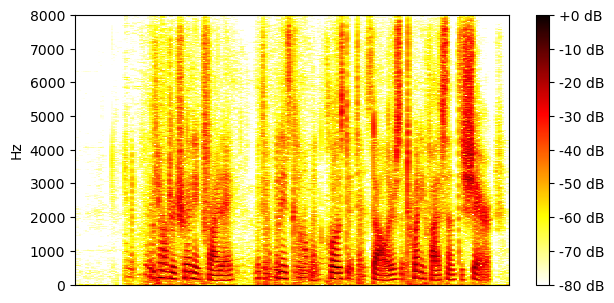
SI-SNR = 1.44 dB |
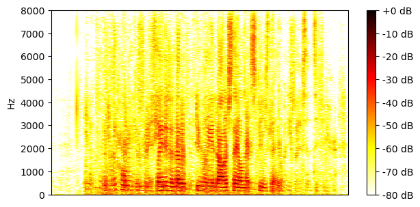
SI-SNR = 2.17 dB |

SI-SNR = -52.45 dB |
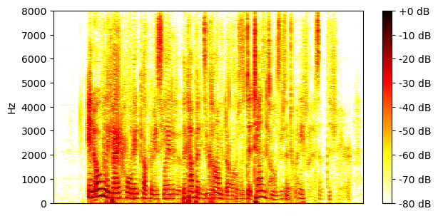
SI-SNR = -75.56 dB |
| Unsupervised 2-source mixtures |
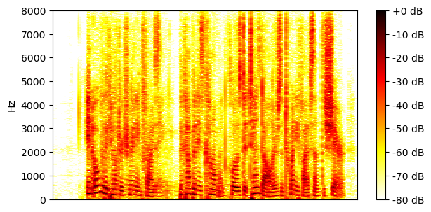
SI-SNR = 12.41 dB |

SI-SNR = 2.87 dB |
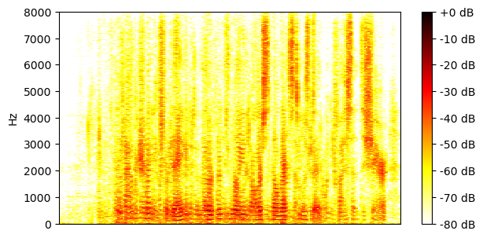
SI-SNR = -64.74 dB |
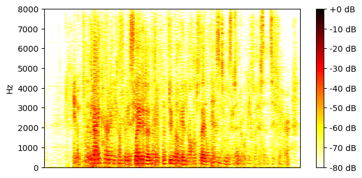
SI-SNR = -66.63 dB |
| Supervised 1-or-2-source mixtures |
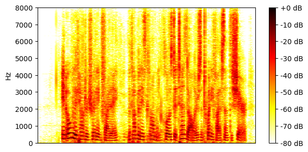
SI-SNR = 12.47 dB |
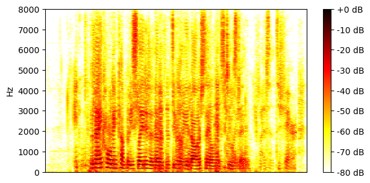
SI-SNR = 9.10 dB |
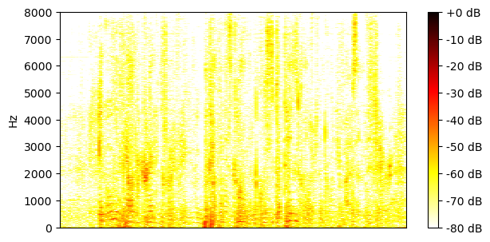
SI-SNR = -49.70 dB |
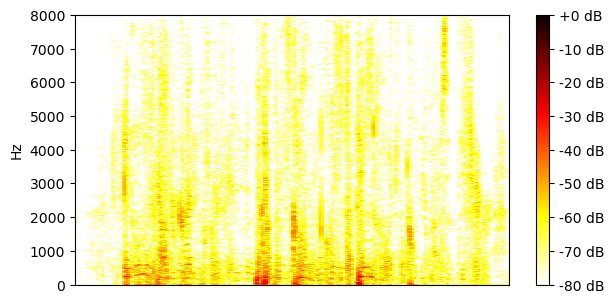
SI-SNR = -54.02 dB |
| Unsupervised 1-or-2-source mixtures |
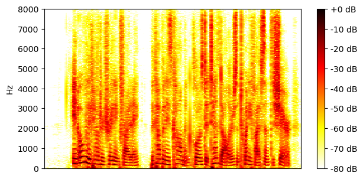
SI-SNR = 15.89 dB |
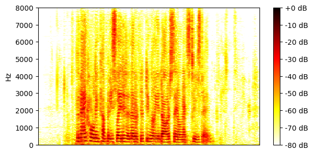
SI-SNR = 11.28 dB |
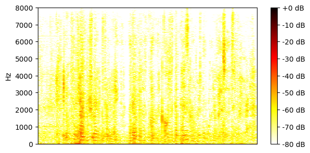
SI-SNR = -48.07 dB |
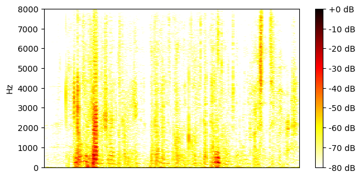
SI-SNR = -59.25 dB |
| Mixture |

|
|||
|---|---|---|---|---|
| Ground-truth sources |

SI-SNR = 2.37 dB |

SI-SNR = -2.36 dB |

SI-SNR = -74.72 dB |

SI-SNR = -74.72 dB |
| Method | Separated source 0 | Separated source 1 | Separated source 2 | Separated source 3 |
| Supervised 2-source mixtures |
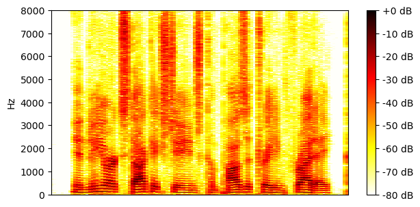
SI-SNR = 16.69 dB |
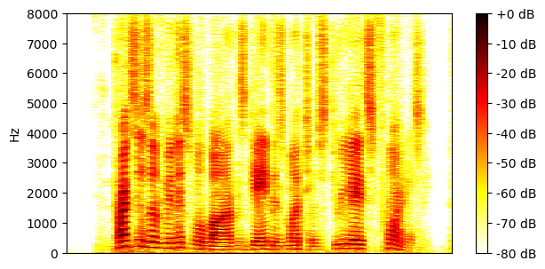
SI-SNR = 13.83 dB |
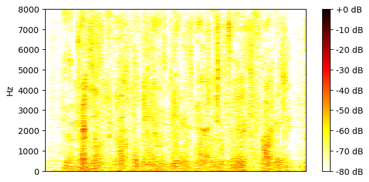
SI-SNR = -43.28 dB |
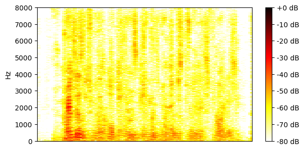
SI-SNR = -48.97 dB |
| Unsupervised 2-source mixtures |
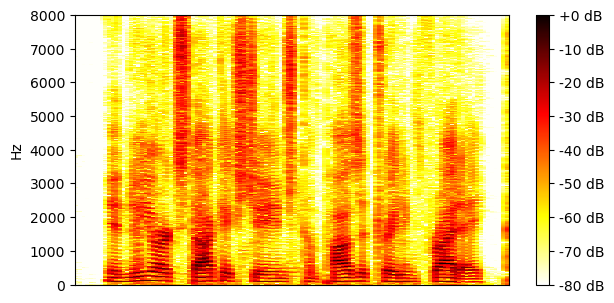
SI-SNR = 16.22 dB |
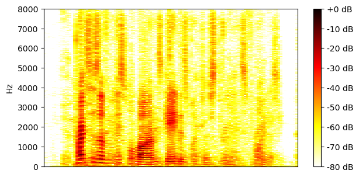
SI-SNR = 2.72 dB |
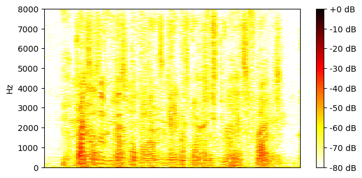
SI-SNR = -47.64 dB |
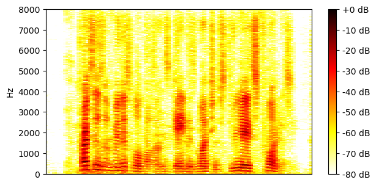
SI-SNR = -65.50 dB |
| Supervised 1-or-2-source mixtures |
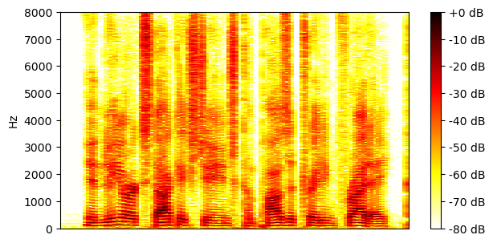
SI-SNR = 18.18 dB |
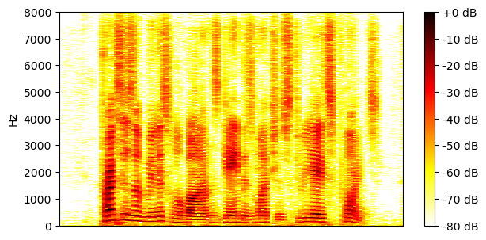
SI-SNR = 15.89 dB |
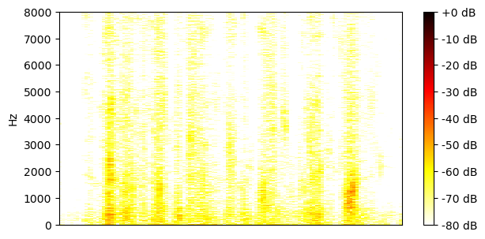
SI-SNR = -35.45 dB |
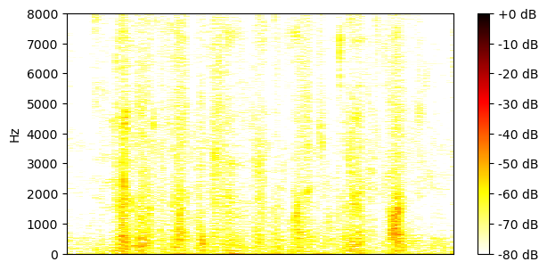
SI-SNR = -36.53 dB |
| Unsupervised 1-or-2-source mixtures |
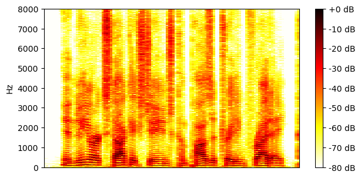
SI-SNR = 18.62 dB |
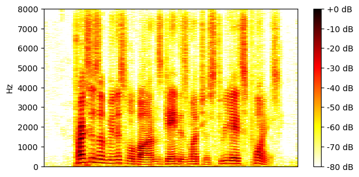
SI-SNR = 16.34 dB |
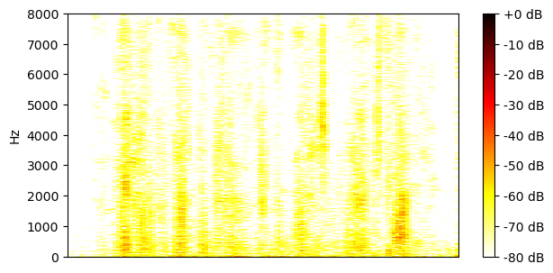
SI-SNR = -36.35 dB |
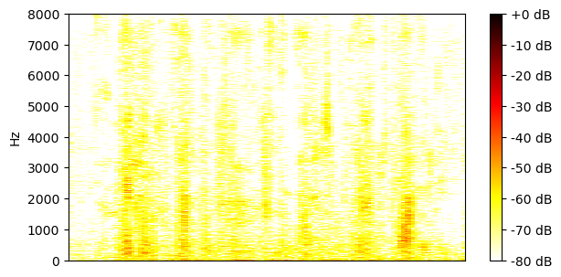
SI-SNR = -37.37 dB |
| Mixture |
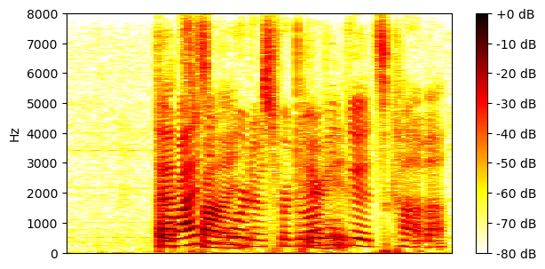
|
|||
|---|---|---|---|---|
| Ground-truth sources |
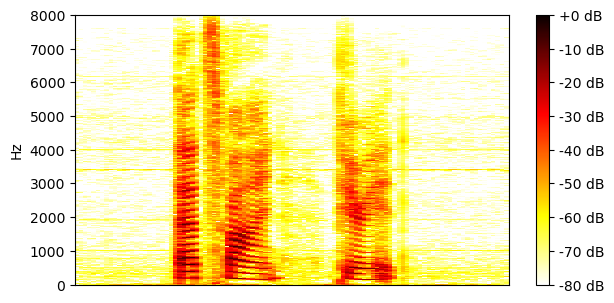
SI-SNR = 0.23 dB |
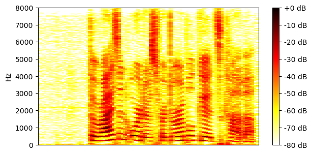
SI-SNR = -0.15 dB |

SI-SNR = -76.08 dB |

SI-SNR = -76.08 dB |
| Method | Separated source 0 | Separated source 1 | Separated source 2 | Separated source 3 |
| Supervised 2-source mixtures |
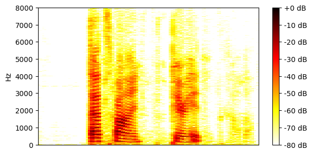
SI-SNR = 16.74 dB |
SI-SNR = 11.70 dB |
SI-SNR = -45.16 dB |
SI-SNR = -59.29 dB |
| Unsupervised 2-source mixtures |
SI-SNR = 16.29 dB |
SI-SNR = 8.36 dB |
SI-SNR = -49.08 dB |
SI-SNR = -62.82 dB |
| Supervised 1-or-2-source mixtures |
SI-SNR = 18.79 dB |
SI-SNR = 18.60 dB |
SI-SNR = -36.62 dB |
SI-SNR = -37.52 dB |
| Unsupervised 1-or-2-source mixtures |
SI-SNR = 19.07 dB |
SI-SNR = 18.98 dB |
SI-SNR = -38.05 dB |
SI-SNR = -38.81 dB |
| Mixture |
|
|||
|---|---|---|---|---|
| Ground-truth sources |
SI-SNR = 5.40 dB |

SI-SNR = -5.40 dB |

SI-SNR = -78.70 dB |

SI-SNR = -78.70 dB |
| Method | Separated source 0 | Separated source 1 | Separated source 2 | Separated source 3 |
| Supervised 2-source mixtures |
SI-SNR = 17.32 dB |
SI-SNR = 11.20 dB |
SI-SNR = -49.96 dB |
SI-SNR = -51.81 dB |
| Unsupervised 2-source mixtures |
SI-SNR = 9.31 dB |
SI-SNR = 8.92 dB |
SI-SNR = -59.33 dB |
SI-SNR = -68.04 dB |
| Supervised 1-or-2-source mixtures |
SI-SNR = 18.55 dB |
SI-SNR = 13.07 dB |
SI-SNR = -39.36 dB |
SI-SNR = -42.36 dB |
| Unsupervised 1-or-2-source mixtures |
SI-SNR = 18.87 dB |
SI-SNR = 13.26 dB |
SI-SNR = -42.69 dB |
SI-SNR = -43.96 dB |